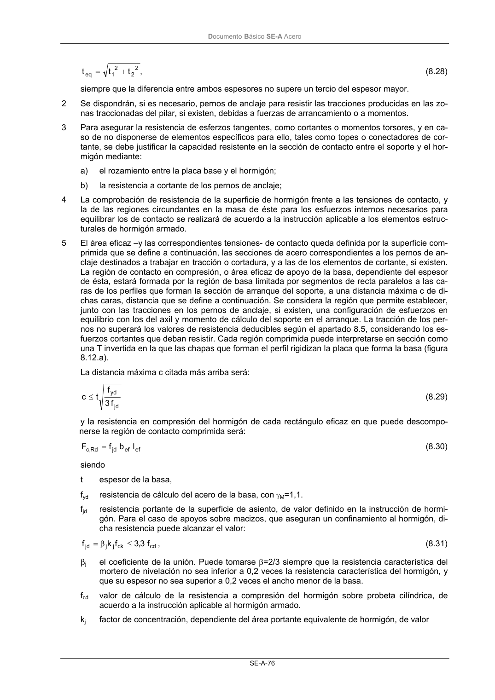
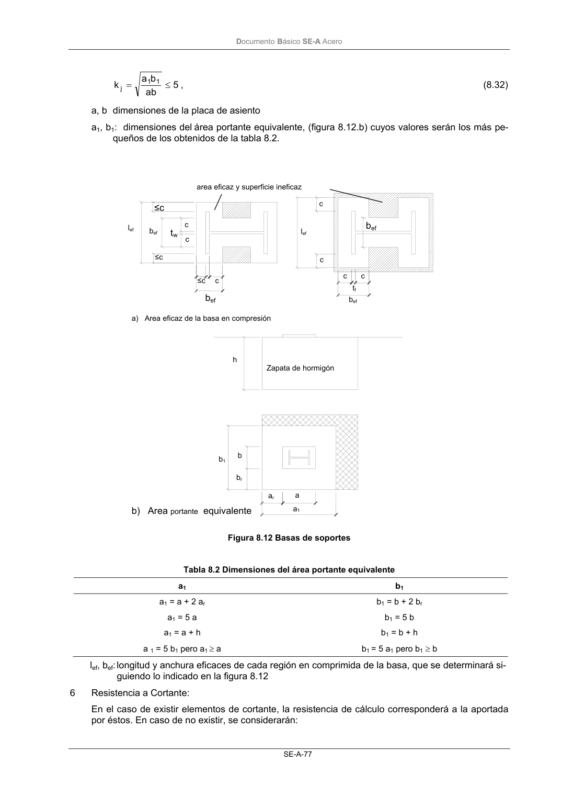
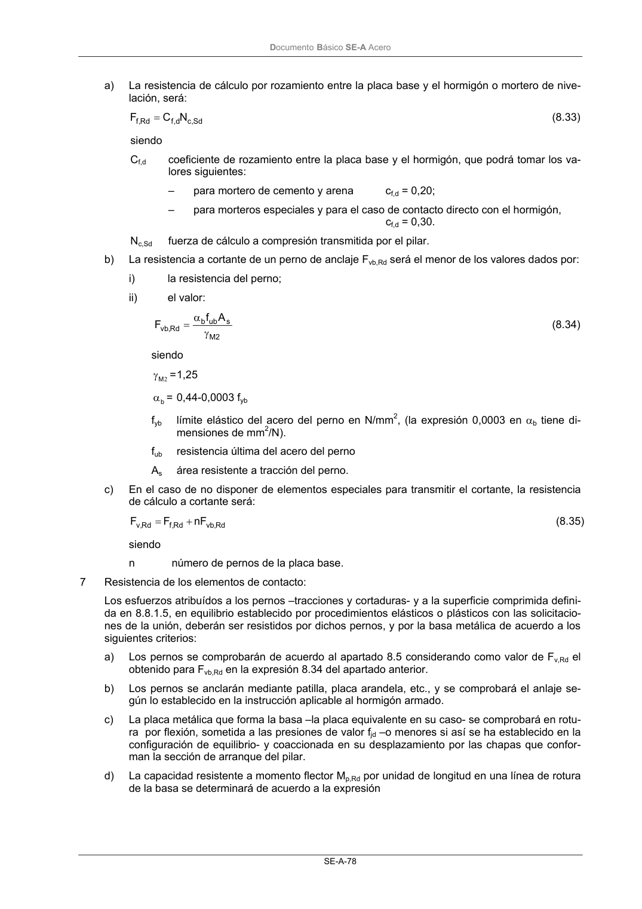

DB-SE-A · 8.8.1 Basas de soportes · versión 2007-10-23 · capa oficial
Formatos: JSON compacto · Markdown · PDF fuente
Ámbito del documento · texto del ámbito · documento y tablas
ID técnico a0121 · PDF pág. 77-81 · jerarquía no validada por persona · contrastado con el literal de la página 77 (candidato tipográfico); no validado por persona · padre: a0120
8.8.1 Basas de soportes La comprobación de la unión de un elemento metálico a otro de hormigón, como son las basas de so- portes, requiere verificar la existencia de resistencia suficiente frente a los esfuerzos transmitidos en la región de contacto, considerando, tanto la resistencia del hormigón de dicha región, como la de los ele- mentos metálicos que materializan el contacto. 1 Los soportes distribuirán los esfuerzos de compresión, transmitidos por las zonas comprimidas del pilar, sobre una superficie suficiente de hormigón por medio de elementos de transición, como son las basas, para que no se supere la resistencia de cálculo de éste. La basa asentará directamente sobre el hormigón, o mejor aún, sobre un mortero de nivelación sin retracción interpuesto entre ambos materiales. En los casos en que pueda asegurarse la inexistencia de tracciones en el arranque se podrá disponer una placa en el extremo del soporte que sirva de apoyo directo de éste a la basa. En tal caso, en la región en que ambas placas se superpongan se podrá adoptar como espesor equivalente el valor: DocumentoBásico SE-A Acero SE-A-76 , t t t 2 2 2 1 eq + = (8.28) siempre que la diferencia entre ambos espesores no supere un tercio del espesor mayor. 2 Se dispondrán, si es necesario, pernos de anclaje para resistir las tracciones producidas en las zo- nas traccionadas del pilar, si existen, debidas a fuerzas de arrancamiento o a momentos. 3 Para asegurar la resistencia de esferzos tangentes, como cortantes o momentos torsores, y en ca- so de no disponerse de elementos específicos para ello, tales como topes o conectadores de cor- tante, se debe justificar la capacidad resistente en la sección de contacto entre el soporte y el hor- migón mediante: a) el rozamiento entre la placa base y el hormigón; b) la resistencia a cortante de los pernos de anclaje; 4 La comprobación de resistencia de la superficie de hormigón frente a las tensiones de contacto, y la de las regiones circundantes en la masa de éste para los esfuerzos internos necesarios para equilibrar los de contacto se realizará de acuerdo a la instrucción aplicable a los elementos estruc- turales de hormigón armado. 5 El área eficaz –y las correspondientes tensiones- de contacto queda definida por la superficie com- primida que se define a continuación, las secciones de acero correspondientes a los pernos de an- claje destinados a trabajar en tracción o cortadura, y a las de los elementos de cortante, si existen. La región de contacto en compresión, o área eficaz de apoyo de la basa, dependiente del espesor de ésta, estará formada por la región de basa limitada por segmentos de recta paralelos a las ca- ras de los perfiles que forman la sección de arranque del soporte, a una distancia máxima c de di- chas caras, distancia que se define a continuación. Se considera la región que permite establecer, junto con las tracciones en los pernos de anclaje, si existen, una configuración de esfuerzos en equilibrio con los del axil y momento de cálculo del soporte en el arranque. La tracción de los per- nos no superará los valores de resistencia deducibles según el apartado 8.5, considerando los es- fuerzos cortantes que deban resistir. Cada región comprimida puede interpretarse en sección como una T invertida en la que las chapas que forman el perfil rigidizan la placa que forma la basa (figura 8.12.a). La distancia máxima c citada más arriba será: jd yd f 3 f t c≤ (8.29) y la resistencia en compresión del hormigón de cada rectángulo eficaz en que puede descompo- nerse la región de contacto comprimida será: ef ef jd Rd ,c l b f F = (8.30) siendo t espesor de la basa, fyd resistencia de cálculo del acero de la basa, con γM=1,1. fjd resistencia portante de la superficie de asiento, de valor definido en la instrucción de hormi- gón. Para el caso de apoyos sobre macizos, que aseguran un confinamiento al hormigón, di- cha resistencia puede alcanzar el valor: cd ck j j jd f 3,3 f k f ≤ β = , (8.31) βj el coeficiente de la unión. Puede tomarse β=2/3 siempre que la resistencia característica del mortero de nivelación no sea inferior a 0,2 veces la resistencia característica del hormigón, y que su espesor no sea superior a 0,2 veces el ancho menor de la basa. fcd valor de cálculo de la resistencia a compresión del hormigón sobre probeta cilíndrica, de acuerdo a la instrucción aplicable al hormigón armado. kj factor de concentración, dependiente del área portante equivalente de hormigón, de valor DocumentoBásico SE-A Acero SE-A-77 5 ab b a k 1 1 j ≤ = , (8.32) a, b dimensiones de la placa de asiento a1, b1: dimensiones delárea portante equivalente, (figura 8.12.b) cuyos valores serán los más pe- queños de los obtenidos de la tabla 8.2. Figura 8.12 Basas de soportes Tabla 8.2 Dimensiones del área portante equivalente a1 b1 a1 = a + 2 ar a1 = 5 a a1 = a + h a 1 = 5 b1 pero a1 ≥ a b1 = b + 2 br b1 = 5 b b1 = b + h b1 = 5 a1 pero b1≥ b lef, bef: longitud y anchura eficaces de cada región en comprimida de la basa, que se determinará si- guiendo lo indicado en la figura 8.12 6 Resistencia a Cortante: En el caso de existir elementos de cortante, la resistencia de cálculo corresponderá a la aportada por éstos. En caso de no existir, se considerarán: Zapata de hormigón ≤c ≤c ≤c c c c bef bef c c tw bef lef bef c c lef tf h b1 b br a ar a1 a) Area eficaz de la basa en compresión b) Area portante equivalente area eficaz y superficie ineficaz DocumentoBásico SE-A Acero SE-A-78 a) La resistencia de cálculo por rozamiento entre la placa base y el hormigón o mortero de nive- lación, será: Sd ,c d ,f Rd ,f N C F = (8.33) siendo Cf,d coeficiente de rozamiento entre la placa base y el hormigón, que podrá tomar los va- lores siguientes: – para mortero de cemento y arena cf,d = 0,20; – para morteros especiales y para el caso de contacto directo con el hormigón, cf,d = 0,30. Nc,Sd fuerza de cálculo a compresión transmitida por el pilar. b) La resistencia a cortante de un perno de anclaje Fvb,Rd será el menor de los valores dados por: i) la resistencia del perno; ii) el valor: 2 M s ub b Rd , vb A f F γ α = (8.34) siendo 2 M γ = 1,25 b α= 0,44-0,0003 fyb fyb límite elástico del acero del perno en N/mm2, (la expresión 0,0003 en αb tiene di- mensiones de mm2/N). fub resistencia última del acero del perno As área resistente a tracción del perno. c) En el caso de no disponer de elementos especiales para transmitir el cortante, la resistencia de cálculo a cortante será: Rd , vb Rd ,f Rd , v nF F F + = (8.35) siendo n número de pernos de la placa base. 7 Resistencia de los elementos de contacto: Los esfuerzos atribuídos a los pernos –tracciones y cortaduras- y a la superficie comprimida defini- da en 8.8.1.5, en equilibrio establecido por procedimientos elásticos o plásticos con las solicitacio- nes de la unión, deberán ser resistidos por dichos pernos, y por la basa metálica de acuerdo a los siguientes criterios: a) Los pernos se comprobarán de acuerdo al apartado 8.5 considerando como valor de Fv,Rd el obtenido para Fvb,Rd en la expresión 8.34 del apartado anterior. b) Los pernos se anclarán mediante patilla, placa arandela, etc., y se comprobará el anlaje se- gún lo establecido en la instrucción aplicable al hormigón armado. c) La placa metálica que forma la basa –la placa equivalente en su caso- se comprobará en rotu- ra por flexión, sometida a las presiones de valor fjd –o menores si así se ha establecido en la configuración de equilibrio- y coaccionada en su desplazamiento por las chapas que confor- man la sección de arranque del pilar. d) La capacidad resistente a momento flector Mp,Rd por unidad de longitud en una línea de rotura de la basa se determinará de acuerdo a la expresión DocumentoBásico SE-A Acero SE-A-79 4 f t M yd 2 Rd , p = (8.36) e) Para aproximar las posiciones de las resultantes de las fuerzas normales a la superficie de contacto pueden usarse los criterios de la figura 8.13. Figura 8.13 Resistencia a fuerzas axiles y momentos. Brazos de palanca 8 La rigidez rotacional inicial Sj,ini de la unión puede determinarse de acuerdo a 8.3 a partir de la de los componentes básicos que se definen a continuación, mediante la expresión




PDF fuente redistribuible: copia fiel enlazada en esta página (SHA256 verificado).